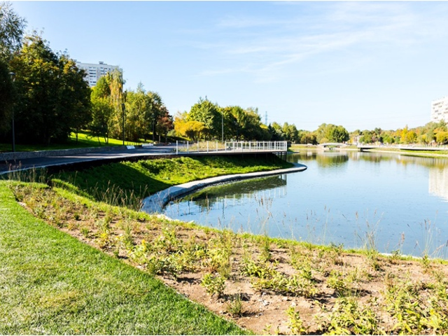

Гидрология лесопарка представлена реками Чертановка, Дубинкинская,
Городня, которые берут начало на Теплостанской возвышенности и впадают в
р. Москву. Еще одна река – Битца – впадает в р. Пахру и ее притоки –
ручьи и водотоки, протекающие по дну оврагов и балок. Для всех речек
характерны v-образные долины шириной до 100-150 м, с крутыми склонами
(частично обрывистыми), промоинами и оврагами, иногда растущими. Питание
или наполнение рек и ручьев водой осуществляется за счет грунтовых вод
и, конечно, поверхностного ливневого стока.
|  |